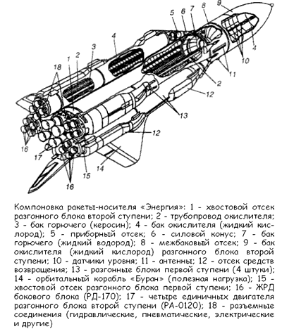

Ракета-носитель «Энергия»
14 мая 1987 года агентство ТАСС сообщило, что в период с 11 по 13 мая Генеральный секретарь ЦК КПСС Михаил Горбачев находится на космодроме Байконур и в городе Ленинске. В ходе пребывания в этих местах он имел многочисленные встречи и беседы с учеными, специалистами, рабочими, инженерно-техническими работниками, а также жителями города. Далее в сообщении ТАСС говорилось: «…Были показаны космические аппараты связи, телевидения, метеорологии и исследования космического пространства. В настоящее время на космодроме ведутся работы по подготовке к запуску новой универсальной ракеты-носителя, способной выводить на околоземные орбиты как многоразовые орбитальные корабли, так и крупногабаритные космические аппараты научного и народнохозяйственного назначения, в том числе модули для долговременных станций».
Теперь мы знаем, что под «универсальной ракетой» подразумевалась тяжелая ракета-носитель «Энергия». Интересно, что это название — «Энергия» — появилось именно во время визита Горбачева на Байконур. В то время она не имела собственного имени, фигурируя в документации под индексом «11К25». Выступая перед генсеком и членами правительства с докладом, Валентин Глушко предложил назвать ракету в честь девиза Перестройки — «Энергия». Идея встретила одобрение, и ракета наконец-то обрела имя, а весь ракетно-космический комплекс многоразового использования отныне назывался «Энергия-Буран».
Что же представляет собой последняя советская ракета-носитель?
Принципиальным отличием ракеты-носителя «Энергия» от системы «Спейс Шаттл» является способность доставлять в космос не только многоразовый орбитальный корабль (в пилотируемом и непилотируемом вариантах), но и другие полезные грузы больших масс и габаритов.
«Энергия» — самая мощная из ракет, созданных когда-либо в СССР. Оценить это можно, исходя из того, что «Энергия» обеспечивает выведение в космос аппаратов массой в пять раз больше, чем эксплуатируемый носитель «Протон», и в три раза больше, чем система «Спейс Шаттл».
Двухступенчатая ракета «Энергия» выполнена по пакетной схеме с параллельным расположением ступеней и боковым расположением полезного груза, в которой четыре боковых ракетных блока 1-й ступени (блоки «А») располагаются вокруг центрального ракетного блока 2-й ступени (блока «Ц»).
РН устанавливается на стартово-стыковочный блок (блок «Я»), предназначенный для ее стыковки с пусковой установкой стартового комплекса. Стартово-стыковочный блок служит опорным силовым элементом при сборке и транспортировке РН. После пуска ракеты стартово-стыковочный блок остается на пусковом устройстве и может использоваться повторно.
Пакетная схема компоновки ракеты-носителя была выбрана благодаря ее универсальности, подразумевающей возможность выведения разнообразных крупногабаритных полезных грузов (пилотируемых орбитальных кораблей и различных беспилотных космических аппаратов) и возможности создания на ее базе ряда ракет-носителей в широком диапазоне грузоподъемности (от 10 до 200 тонн) за счет изменения количества ракетных блоков 1-й ступени и использования различных вариантов блоков 2-й ступени.
Базовая модель (собственно ракета «Энергия») имеет стартовую массу 2400 тонн. Конечная масса 400 тонн включает массу полезного груза. Суммарная тяга двигателей в момент старта — около 3600 тонн. Общая длина ракеты-носителя «Энергия» — около 58,8 метра.
Ракета способна выводить на низкие орбиты ИСЗ полезную нагрузку до 100 тонн, на геостационарную орбиту — до 20 тонн, на траекторию полета к Луне — до 32 тонн. При этом она обеспечивает всеазимутальность пусков, но за базовые орбиты, определяемые районами падения отработавших ракетных блоков 1-й ступени, приняты орбиты с наклонением: 51, 65 и 97°.
При разработке конструктивно-компоновочной схемы ракеты-носителя ее создателям пришлось учитывать возможности производственно-технологической базы. Так, диаметр ракетного блока 2-й ступени (блок «Ц») был выбран 7,7 метра, так как больший диаметр (целесообразный по условиям оптимальности) реализовать было нельзя из-за отсутствия соответствующего оборудования для механической обработки, а диаметр ракетного блока 1-й ступени (блок «А») 3,9 метра диктовался возможностями железнодорожного транспорта.
Как видите, римские лошади и по сей день определяют собой черты и габариты космической техники.
Большое внимание при проектировании ракеты уделялось выбору компонентов топлива. Рассматривалась возможность использования твердого топлива на 1-й ступени, кислородно-керосинового топлива на обеих ступенях, однако отсутствие необходимой производственной базы для изготовления крупногабаритных твердотопливных двигателей и оборудования для транспортирования снаряженных двигателей исключило возможность реализации этих вариантов.
Двигательная установка ракеты-носителя «Энергия» состоит из четырех четырехкамерных кислородно-керосиновых двигателей «РД-170» (по одному на каждом из четырех блоков 1-й ступени ракеты) и четырех однокамерных кислородно-водородных двигателей «РД-0120» на центральном блоке 2-й ступени, а также пневмогидросистемы, обеспечивающей их функционирование. Тяга у земли двигателя 1-й ступени — 740 тонн, двигателя 2-й ступени — 146 тонн, в пустоте — 190 тонн. Двигатели «РД-170», специально разработанные для ракеты-носителя «Энергия», обладают рекордными параметрами и не имеют аналогов за рубежом, а двигатели «РД-0120» — первые мощные отечественные двигатели, использующие в качестве горючего жидкий водород.
Разновременный запуск всех двигателей ракеты-носителя у земли (двигатели центрального блока запускаются с опережением) и плавный набор ими тяги позволяют минимизировать внешние нагрузки на конструкцию ракеты-носителя и обеспечивают наиболее полный контроль функционирования двигательных установок до отрыва ракеты-носителя от пускового устройства, что исключает ее старт с неисправным двигателем. Широкие диапазоны регулирования тяги двигателей и массового соотношения компонентов топлива, поступающего в камеры, обеспечивают реализацию наиболее оптимальных параметров движения ракеты-носителя и синхронизацию опорожнения топливных баков. Штатное выключение двигателей происходит после их перевода на режим конечной ступени тяги, составляющей 40–50 % от номинального значения.

Ракета-носитель на активном участке полета управляется и стабилизируется путем отклонения вектора тяги двигателей 1-й и 2-й ступеней в двух плоскостях: на 1-й ступени качаются в двух плоскостях четыре камеры сгорания каждого двигателя, а на 2-й ступени — четыре двигателя в двух плоскостях каждый. Для этого двигатели имеют узлы качания, позволяющие изменять положение вектора тяги для управления ракетой-носителем.
Ракетный блок 1-й ступени занимает особое место среди новых проектно-конструкторских решений, так как проектировался унифицированным для семейства ракет-носителей среднего, тяжелого и сверхтяжелого классов. В соответствии с техническими требованиями, выдвинутыми к ракетно-космическому комплексу, «Энергия-Буран» должен быть многоразовым и использоваться в полете не менее десяти раз. Применительно к ракетному блоку с жидкостным ракетным двигателем такое требование было предъявлено впервые в мировой практике. В результате всесторонних исследований была выбрана парашютно-реактивная схема возвращения блока после его отделения от ракеты-носителя.
Элементы средств возвращения (парашютная система, твердотопливные ракетные двигатели мягкой посадки и разделение параблока на моноблоки, посадочное устройство, система управления возвращением) расположены частично внутри отсеков блока «А», большей частью — под крупногабаритными обтекателями, установленными на его наружной поверхности.
Понятно, что возвращение блоков и их повторное использование — это сложнейшая научно-техническая задача, которую предполагалось решать последовательно, по мере проведения экспериментальной отработки и увеличения числа пусков ракет-носителей типа «Энергия».
При первых летных испытаниях блоки «А» в составе ракеты-носителя не оснащались средствами возвращения — зато для обеспечения неизменных аэродинамических обводов на блоках «А» были установлены все обтекатели средств возвращения.
Программой летно-конструкторских испытаний системы «Энергия-Буран», утвержденной в 1986 году, предусматривалось десять пусков ракеты-носителя «Энергия» с кораблем «Буран» — причем первые пуски должны были быть беспилотными.
Учитывая отставание в изготовлении первой летной ракеты-носителя и орбитального корабля, главный конструктор НПО «Энергия» Борис Губанов предложил провести первый запуск, используя экспериментальную ракету под индексом «6С». В качестве полезного груза должен был выступать уже готовый космический аппарат «Скиф-ДМ» (подробнее об этом аппарате я расскажу в главе 18).
Предложение о пуске экспериментальной ракеты-носителя, после доработки получившей индекс «6СЛ», вызвало дискуссию, продолжавшуюся до начала 1987 года. В конце концов разрешение на пуск выдали под ответственность НПО «Энергия».
Первый пуск ракеты-носителя «Энергия-6СЛ» был проведен 15 мая 1987 года в 21 час 30 минут (по московскому времени) с задержкой на пять часов. Задержка была вызвана негерметичностью разъемного стыка трубопроводов по линии управляющего давления. Эту неисправность удалось оперативно устранить.
Пуск прошел успешно. Изменение всех параметров движения ракеты по времени полностью соответствовало данным предварительного моделирования. «Скиф-ДМ» отделился на 482-й секунде полета на заданной высоте.
В сообщении ТАСС от 17 мая 1987 года отмечалось:
«Успешное начало летно-конструкторских испытаний ракеты-носителя «Энергия» является крупным достижением отечественной науки и техники в год 70-летия Великого Октября, открывает новый этап в развитии советской ракетно-космической техники и широкие перспективы в мирном освоении космического пространства».
Триумф от запуска новой ракеты несколько омрачила гибель аппарата «Скиф-ДМ». Тут следует заметить, что при планировании состава первой экспериментальной ракеты конструкторы предполагали отправить на орбиту простейший макет полезной нагрузки, представлявший собой цилиндр из толстолистовой стали с оживальной носовой частью диаметром 4 метра и длиной около 25 метров. По внешним габаритам он был аналогом будущего грузового отсека, но пустой внутри. Разделявшие его переборки служили только для увеличения веса. По программе полета он должен был приводниться вместе со второй ступенью «Энергии» в акватории Тихого океана.
Но мнение разработчиков расходилось с планами руководства и Генерального конструктора Глушко. Они считали, что пуск следует завершить полетом реального космического объекта. Так, на роль полезной нагрузки была отобрана 80-тонная космическая станция «Скиф-ДМ», которой впоследствии присвоили официальное название «Полюс».
После отделения от ракеты-носителя «Полюс» должен был совершить маневр поворота на 180 по тангажу и на 90 по крену. Этот маневр был выполнен штатно. Однако процесс «переворачивания» из-за ошибки, заложенной в программе полета макета, не прекратился, а продолжился.
В расчетный момент автоматически включилась маршевая двигательная установка, которая сообщила бы космическому аппарату дополнительную скорость порядка 60 м/с, необходимую для его выхода на штатную орбиту. В связи с тем, что разворачивание продолжалось, «Полюс», не добрав нужной скорости и совершая сложный кульбит относительно баллистической траектории, врезался в океан.
ТАСС прокомментировало это обстоятельство весьма сдержанно:
«Вторая ступень ракеты-носителя вывела в расчетную точку габаритно-весовой макет спутника. […] Однако из-за нештатной работы его бортовых систем макет на заданную орбиту не вышел и приводнился в акватории Тихого океана».